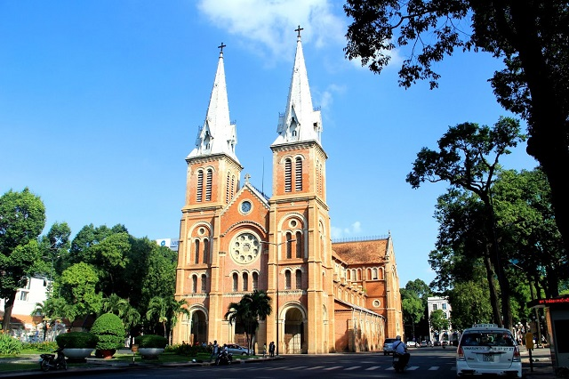

Saigon
Saigon - The Biggest Economy of S-shaped country
Ho Chi Minh City commonly known as Saigon, is the largest city in Vietnam, situated in the south. In the southeastern region, the city surrounds the Saigon River and covers about 2,061 square kilometres (796 square miles).
PLACES TO CHECK OUT
BEN THANH MARKET

It is impossible not to mention this place first when it has been considered a symbol of Saigon for decades..... See more
DUC BA CHURCH

If you are a fan of the classic French literary work The Hunchback of Notre Dame (Victor Hugo), you must have imagined the context of the story.... See more
MUST-TRY DISHES
STEAMED RICE

Steamed rice is a specialty dish of the people of Vietnam's Southern areas. It is popular in many regions, especially Saigon..... See more
HU TIEU

Hu Tieu is a dish using rice products from the Chaozhou people and the Minnan people, with many similarities with the Cantonese saha chalk and the Hakka people, which was introduced to many regions in and around the world....See more